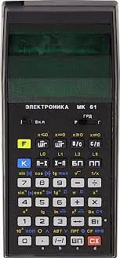
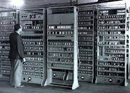
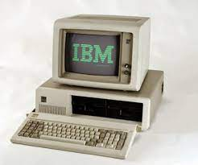
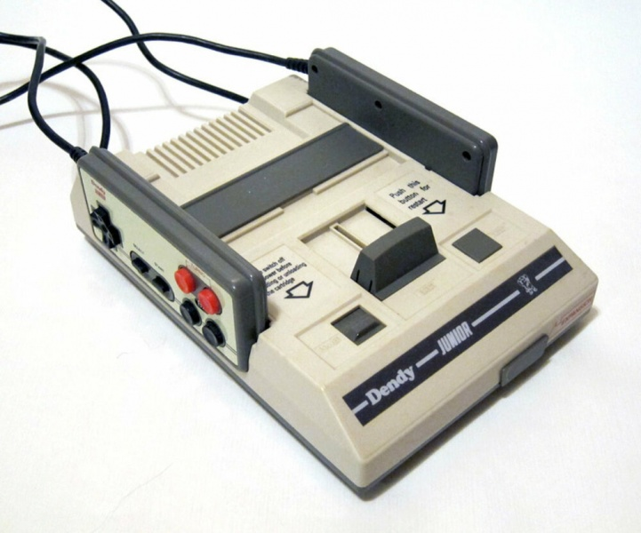
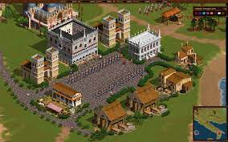

Від калькулятора до курсів з верстки за 30 років
Коротка розповідь про себе, точніше про, те як я потрапив на курс з верстки до Євгена.
На найкращий курс в Галактиці!
Довоєнні роки
Шкільна інформатика
Зацікавився я комп'ютерами ще років тридцять назад, в далеких і гарячих 90-х. Десь років в 13-14 почав програмувати на калькуляторі ("Електроніка МК-61", здається). Звучить, мабуть, трохи страшно і смішно, але це було так. Сам процес представляв собою введення готового коду в інженерний (програмований) калькулятор (саме так називалися ці чудо-пристрої).
Моя "Електроніка"!
Код брався з декількох книжечок, які завалялися в шкільній бібліотеці нашого села. В цих чудових манускриптах вперше побачив фотографії справжніх ПК та їхніх прапращурів - ЕОМ тощо.
Прапращури сучасних ПК
 Комп'ютери були присутні в школі, але ми бачили їх лише запакованими в чохлах у комп'ютерному класі (до речі, це був самий новий і гарний клас). Я так розумію, поки школа замовила ці машини, оплатила, підмастила та отримала, то залізяки вже давно постаріли і морально, і фізично. Натомість, в старших класах учні малювали гарні блок-схеми з алгоритмами та інтенсивно вивчали BASIC в шкільних зошитах з інформатики. А вже йшов, на хвилиночку, 1998 рік. На "загнівающем Западе" користувачі юзали ПК через нормальні інтерфейси, опановували Word та Excel. А в нашому селі лише почали з'являтися телевізійні приставки а-ля Dendy...
Ось вона, один із символів далеких 90-х... Ігрова приставка Dendy
І це був початок мого хибного ІТ-шляху, коли замість уроків я грав в нові ігри...
Перша "Вінда"
Перше знайомство з "Віндою" та її програмним начинням відбулося уже у ветеринарному технікумі десь в 2000 році.
Windows 2000. Ностальгія...

Милостива адміністрація Одеського аграрного університету, (до якого відносився наш "технарь") подарувала нам два "компи-доходяги". Насправді, півтора комп'ютера: в одного постійно "відвалювався" шлейф від монітора і бідолага показував всі кольори веселки в різних інтерпретаціях, але не ніяк не те, що в ньому хотіли побачити. Тим паче, основи Word та Excel вдалося опанувати. І як не було цікаво та захопливо працювати в цих програмах, хибний шлях тривав - стандартні ігри Windows часто замінювали вивчення основ ПК...
Університет та доступ до мережі Інтернет
З 2001 року, після вступу до Білоцерківського аграрного університету , доступ до ПК (і навіть інтернету!) став уже не таким чимось екстраординарним. В "універі" постійно читались уроки з інформатики, які були найкращими та найочікуванішими. У мене з'явився друг, в якого був власний ПК на базі Pentium. Це дало можливість поглибити свої знання в бажаній сфері, але якраз до виходу "Далекобійників", нових частин War Craft та Козаків. Ігри знову запанували в моїй ІТ-сфері...
На це я проміняв свій безцінний час.. Хоча гра неймовірна, про Україну!
Після закінчення університету трохи працював за спеціальностю, але не зайшло, чесно. Хоча закінчив з відзнакою, причому практично своїми знаннями. Попрацював на різних роботах кілька років. Десь у 2006 потрапив на "круте" будівництво і з "крутою" зарплатою на той час. Це дало змогу купити свій перший ПК та одружитися.
Власний ПК
З'явилася сім'я, нові турботи, але у мене був власний комп'ютер! Ну, думав, "щас я наваяю"! Наваяв. Накупив літератури по Windows XP (до цих пір не розумію, навіщо), зареєструвався на всіх популярних ІТ-форумах і продовжував грати в нові ігри. Згодом деякі стали набридати, деякі уже перестав "тягнути" мій ПК. Зосередився на World of Tanks, на якій "сидів" кілька років.
Надовго, затягнула, ця танкова зараза!
Не скажу, що геть не розвивав комп'ютерну "грамотність". Стосовно встановлення операційних систем, різних програм, драйверів та налаштування цього всього розібрався навіть дуже не погано. Пам'ятаю, колись встановив одночасно чотири різні ОС на свій ПК, які кілька років чудово уживалися одна з одною і не глючили. Пробував себе в YouTube, вів декілька каналів, заробив кілька десятків "баксів", не так собі! Кілька місяців працював фрілансером, тільки копірайтером, писав статті. Створював сайти на різних конструкторах, працював з WordPress (створив ігровий сайт на готовому шаблоні MyArcadePlagin).
На цьому плагіні працював мій ігровий сайт
Тепер уже згадую, що наближався до верстки сайтів з нуля неодноразово, бо шаблони та готові рішення на базі конструкторів мені геть не подобалися. Але нова гра або новий івент в "Танках" все псували: "пограю, а потім як стану комп'ютерщиком!". Як бачимо, рух хибним шляхом тривав...
Світ змінився... Початок жахіття...
Потрібно щось змінювати. Мені уже 43...
Почалася війна... Взагалі про щось думати та планувати щось стало недоречно. Але життя триває. Потрібно щось змінювати. Завдяки випадковому 2-тижневому демо-курсу по HTML-CSS раптом зрозумів, що верстка може стати тим напрямком, до якого я був так близько, та через власну слабкість духу "відходив" на колишні позиції. На цих заняттях мене вразила та сама магія верстки, про яку так захопливо говорить мій гуру Євген. По закінченню навчання жагуче захотілося продовжити далі, але цінник курсів тієї "контори" в 30-40 тисяч грн мені був не по кишені.
Пошук СВОГО вчителя
Інтуіція настійливо свердлила закутки моєї свідомості, підказуючи, що повинен існувати МІЙ курс, МІЙ шлях! Дійсно, за один вечір настирливого та цілеспрямованого "серфінгу" я натрапив на "Фрілансера по життю"! Зрозуміло, що пройшов весь безкоштовний курс. Тепер на "коштовному" :) Хоча, на мою скромну думку, курс безцінний! Хоча б з позицій отримання мега-порції мотивації, позитивного заряду та оптимізму!
Без коментарів!

Причини "входу" в ІТ
Для себе курс розцінюю як своєрідний челендж типу "войті в ІТ в 43". Причин для цього було декілька:
- Дуже хочу, щоб мій 13-літній син вибрав ІТ-професію. Можливо, йому сподобається те, чим буде займатися його батько
- Неможливо досягнути чогось в роботі, яка не подобається. Перевірено 20-літнім досвідом. Тому потрібно прагнути того, що до душі
-
Давня мрія не бути прив'язаним до робочого місця. Звідси:
- Нестабільність на фрілансі - це міф
- На "не-фрілансі" аналогічна нестабільність
- Кожен українець фрілансер, бо ми вільні та незалежні!
- Дружина закінчує аспірантуру і під Новий Рік буде захищати кандидатьску дисертацію. Теж хочу вчитися, а то лише працюю. А мій курс набагато кращий за ту аспірантуру (:
- Якщо навіть вийду на нинішній дохід в 400 доларів, але працюватиму в своє задоволення, то це вже перемога, ще й неабияка!
Замість висновку
Загалом, мораль слідуюча: якщо маєте до чогось тягу та бажання чогось досягнути, то робіть це сьогодні і зараз. Розважатися будете пізніше. Перевірено гірким досвідом. Своїм, на жаль.
Не робіть тих самих помилок. Так, наче й нічого страшного, що до 43 років я не досягнув того, що давно мене цікавило. Хоча стабільно працював, мав якийсь допустимий дохід. Але просто грав в ігри. І... І практично не розвивався в давно омріяному напрямку. А вислів "на роботу, як на свято" був скоріше саркастичним, аніж реальним. Про поняття "Живи, а працюй у вільний час!" взагалі мова не йде.
Отож, відкиньте сумніви, зіжміть волю в кулак і непохитно прямуйте до своєї мети. Зробіть перший крок, основний. А такі Люди, як "Фрілансер по життю" та його команда допоможуть зробити наступні. Робіть ці кроки сьогодні. Зараз.
Дякую усім, хто прочитає цю "домашку". Це не реклама для Жені, не реклама курсу. Просто "домашка" з реального життя. Якось так...